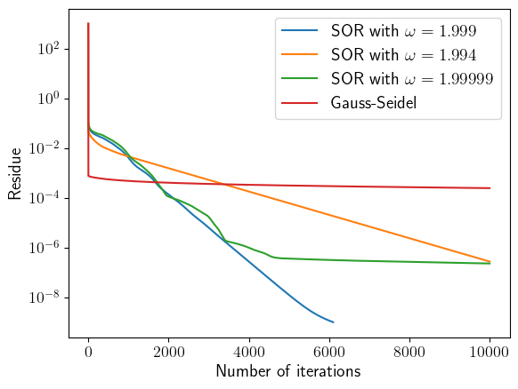
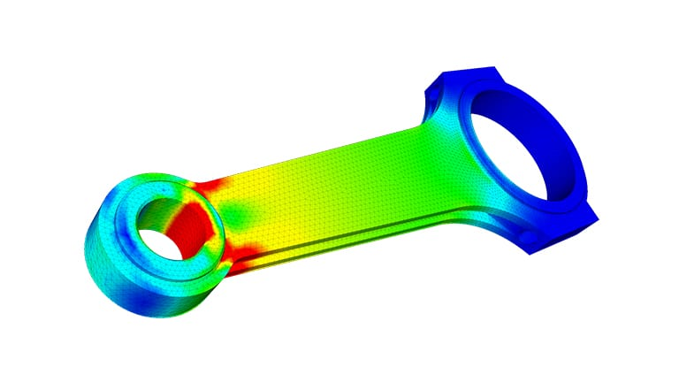

Numerical PDE
Boundary Value Problems
Elliptic PDEs are often posed as boundary value problems, such as the Poisson equation in 2D:
$$ \frac{\partial^2 u}{\partial x^2} + \frac{\partial^2 u}{\partial y^2} = \rho(x,y) $$There are two main types of boundary conditions:
- Dirichlet: $u = f(x, y)$ on the boundary
- Neumann: $\partial u/\partial n = v(x, y)$ on the boundary, where $\mathbf{n}$ is the direction normal to the boundary
Relaxation Methods
A typical way to solve boundary value problems is the relaxation method.
It attempts to seek solutions to the time-dependent equation $$ \frac{\partial u}{\partial t} = \frac{\partial^2 u}{\partial x^2} + \frac{\partial^2 u}{\partial y^2} - \rho(x,y) $$ in the limit $t \to \infty$, with the given boundary conditions.
Since this is a diffusion-type equation with $D = 1$, we can use the methods we have introduced for diffusion to solve this problem.
Jacobi's Method
For example, consider the FTCS method with $\Delta x = \Delta y = \Delta$:
$$ u_{i,j}^{n+1} = u_{i,j}^n + \frac{\Delta t}{\Delta^2} (u_{i+1,j}^n + u_{i-1,j}^n + u_{i,j+1}^n + u_{i,j-1}^n - 4 u_{i,j}^n) - \rho_{i,j}\Delta t $$This method is only stable when $\Delta t \leq \frac{1}{4} \Delta^2$. If we take the maximum time step size, the method becomes: $$ u_{i,j}^{n+1} = \frac{1}{4} (u_{i+1,j}^n + u_{i-1,j}^n + u_{i,j+1}^n + u_{i,j-1}^n - \rho_{i,j}\Delta^2) $$
This is equivalent to simply averaging the 4 neighbouring points and subtracting the source term.
Jacobi's Method
This method is called Jacobi's method, and it is related to a property of the Laplace equation. If $u$ is a solution to the Laplace equation:
$$ \frac{\partial^2 u}{\partial x^2} + \frac{\partial^2 u}{\partial y^2} = 0 $$Then the average of $u$ over a small sphere is equal to the value of $u$ at the center of the sphere.
Jacobi's method simply keeps setting $u$ to be the average of its 4 neighbors plus a source term, until it converges.
Jacobi's Method
As we discussed in diffusion problems, the FTCS method at the stability limit is very slow. Similarly, Jacobi's method is very slow in converging to the desired solution.
To quantify the rate of convergence, let us introduce some mathematical language. We write the Jacobi iteration as: $$ \mathbf{u}^{n+1} = \mathbf{A} \mathbf{u}^n + \mathbf{b} $$ where $\mathbf{A}$ is called the iteration matrix, and $\mathbf{b}$ is a vector that represents the source term. Solving the original problem is equivalent to finding the fixed point of this iteration.
Jacobi's Method
In order to achieve convergence, the iteration matrix should have all its eigenvalues less than 1. We call the absolute value of the largest eigenvalue of $\mathbf{A}$ its "spectral radius" $\rho_s$.
For Jacobi's method on a $N\times N$ grid, the spectral radius is: $$ \rho_s \approx 1 - \frac{\pi^2}{2N^2} $$
Jacobi's Method
After $n$ iterations, the overall error is reduced by $\rho_s^n$. If our goal is to reduce the error by a factor of $10^{-p}$, then the number of iterations required is:
Plugging in the spectral radius for Jacobi's method, we find that: $$ n \approx \frac{2p N^2\log 10}{\pi^2} \approx \frac{1}{2} p N^2 $$
Gauss-Seidel Method
A small improvemennt over Jacobi's method is the Gauss-Seidel method
$$ u_{i,j}^{n+1} = \frac{1}{4} (u_{i+1,j}^n + u_{i-1,j}^{n+1} + u_{i,j+1}^n + u_{i,j-1}^{n+1} - \rho_{i,j}\Delta^2) $$Although the right hand side makes use of $u^{n+1}$, it does not require solving a set of linear equations. Instead, we can simply update the grid points in a sweep from left to right, top to bottom.
Gauss-Seidel Method
For example, the following code implements the Gauss-Seidel method:
for (int j = 1; j < Ny - 1; j++) {
for (int i = 1; i < Nx - 1; i++) {
int n = i + j * Nx;
u[n] = 0.25 * (u[n + 1] + u[n - 1]
+ u[n + Nx] + u[n - Nx]
- rho[n] * delta * delta);
}
}
Gauss-Seidel Method
The Gauss-Seidel method is faster than Jacobi's method, but it is still very slow. The spectral radius is the square of Jacobi's: $$ \rho_s \approx 1 - \frac{\pi^2}{N^2} $$
The number of iterations required to reduce error by a factor of $10^{-p}$ is: $$ n \approx \frac{p N^2\log 10}{\pi^2} \approx \frac{1}{4} p N^2 $$ It's about a factor of 2 faster than Jacobi's method.
Successive Overrelaxation
Successive overrelaxation (SOR) is a method that converges significantly faster than Gauss-Seidel or Jacobi's method.
The idea is to add a fraction $\omega$ of the difference between the new and old values to the new value: $$ u_{i,j}^{n+1} = (1 - \omega) u_{i,j}^n + \frac{\omega}{4} (u_{i+1,j}^n + u_{i-1,j}^{n+1} + u_{i,j+1}^n + u_{i,j-1}^{n+1} - \rho_{i,j}\Delta^2) $$
When $\omega = 1$, this is the Gauss-Seidel method. When $1 < \omega < 2$, the method converges faster than Gauss-Seidel.
Successive Overrelaxation
The key of SOR lies in choosing $\omega$.
The optimal choice of $\omega$ is often only known empirically. For the Poisson equation in 2D, the optimal choice is: $$ \omega \approx 2 - \frac{1}{N} $$
The rate of convergence is very sensitive to $\omega$, and the best rate is achieved when $\omega$ is close to the optimal choice.
Successive Overrelaxation
Under the optimal choice, the spectral radius of SOR is: $$ \rho_\mathrm{SOR} \approx 1 - \frac{2\pi}{N} $$
The number of iterations required to reduce error by a factor of $10^{-p}$ is now: $$ n \approx \frac{p N\log 10}{\pi} \approx \frac{1}{3} p N $$ This is significantly faster than Gauss-Seidel!
Successive Overrelaxation
Here is the convergence for different $\omega$ for Poisson equation on a $1024\times 1024$ grid:
It turns out $\omega \approx 2 - 1/N$ is a pretty good choice.
Successive Overrelaxation
Some practical details for implementing SOR:
You can use the normal Jacobi iteration formula with the SOR factor. Practically, it does not make a huge difference vs Gauss-Seidel: $$ u_{i,j}^{n+1} = u_{i,j}^n + \frac{\omega}{4} (u_{i,j}^n + u_{i-1,j}^{n} + u_{i,j+1}^n + u_{i,j-1}^{n} - \rho_{i,j}\Delta^2 - 4 u_{i,j}^n) $$
The terms in the parentheses can be thought of as a residue. For convergence, one can require that the maximum of the residue on the grid is less than some tolerance $\varepsilon$. This is the condition to terminate the iteration.
Successive Overrelaxation
Solving the equation $\nabla^2V = -\rho$ with homogeneous Neumann boundary conditions:
Finite Element Method
Finite Element Method
Finite element method is designed to solve elliptic PDEs as boundary value problems, and it's very widely used in the industry. It's also frequently called "finite element analysis".
Finite Element Method
Let's illustrate the basic idea of FEM using the Poisson equation $\nabla^2u = \rho$ again.
Define $\phi(x, y)$ as a test function that is only nonzero in a small region $R$ and vanishes on the boundary. The following integral is zero if $u$ satisfies the Poisson equation: $$ \int_R \left[\phi \nabla^2 u - \rho \phi\right]\,dxdy = 0 $$
Using divergence theorem, we can transform the equation into: $$ \int_R \left[\nabla\phi \cdot \nabla u + \rho\phi\right]\,dxdy = 0 $$
Finite Element Method
Suppose we construct a number of these locally non-zero functions $\phi_i(x, y)$ and expand the unknown function $u(x, y)$ in terms of these functions:
$$ u(x, y) = \sum_i u_i \phi_i(x, y) $$$u_i$ can be thought of as the value of $u$ at the center of the $i$-th element.
Finite Element Method
Plugging the expansion into the integral equation, we have:
$$ \sum_i u_i \int_R \nabla\phi_i \cdot \nabla \phi_j\,dxdy = -\int_R\rho(x, y)\phi_j\,dxdy $$If the elements are small enough, the $\rho(x, y)$ can be considered constant within each element, and the integral on the right hand side can be evaluated directly. This gives a linear system of equations for the unknowns $u_i$: $$ \sum_i A_{ij} u_i = \rho_j $$
Finite Element Method
In practice, a 2D computational domain is often discretized into a triagular grid, and the basis functions $\phi_i(x, y)$ are triangular interpolation functions.

Finite Element Method
Typically, every triangle is associated 3 basis functions $\phi_{a, b, c}$, one for each vertex.
They are chosen such that, for example, $\phi_a = 1$ at vertex $a$, and $\phi_a = 0$ at vertices $b$ and $c$. Within the triangle, $\phi_a$ is a linear function of $x$ and $y$. Outside the triangle, $\phi_a = 0$. Similarly for $\phi_b$ and $\phi_c$.
An explicit expression for $\phi_a(x, y)$ can be found using the above constraints: $$ \phi_a(x, y) = \frac{1}{2S}\left[(x_by_c - x_cy_b) + (y_b - y_c)x + (x_b - x_c)y\right] $$ where $S$ is the area of the triangle.
Finite Element Method
The finite element equation is: $$ \sum_i u_i \int_R \nabla\phi_i \cdot \nabla \phi_j\,dxdy = \int_R\rho(x, y)\phi_j\,dxdy $$
Since the basis functions $\phi_i$ are linear, their derivatives $\nabla\phi_i$ are quite easy to write down analytically. The cross term $\int \nabla\phi_i\cdot\nabla\phi_j$ vanishes if triangles $i$ and $j$ do not share a vertex.
For values of $u_i$ on the boundary, the terms are moved to the right hand side and becomes part of the source term.
Finite Element Method
The matrix $\mathbf{A}$ in the finite element equation is sparse, since only neighboring triangles produce nonzero coefficients. It is also symmetric by construction.

Finite Element Method
The final step is to solve a sparse matrix equation $\mathbf{A}\mathbf{u} = \mathbf{b}$.
For small problems, sparse LU decomposition or Cholesky decomposition work well. Use a reputable library with sparse matrix capabilities.
For large problems, the conjugate gradient method is prefered.
Finite Element Method
In practice, FEM is a very mature algorithm with many software packages and domain-specific variations. It is an extremely important method to know for a computational physicist.
List of FEM packages